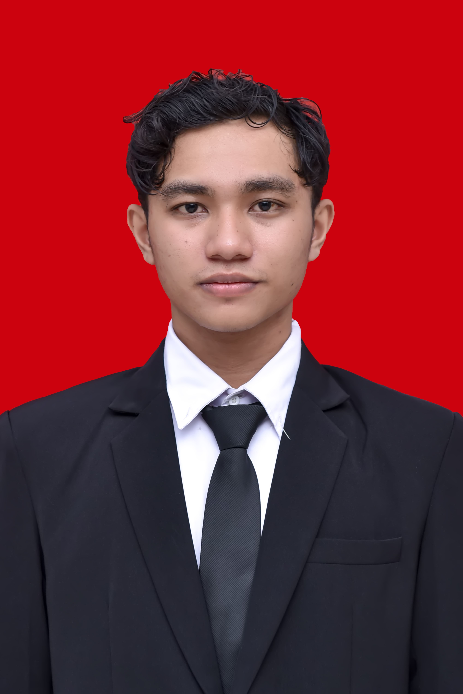

Syarif Mohammad Syakur
Software Engineer & IT Specialist

Profil Profesional
Lulusan S1 Teknologi Informasi yang berdedikasi tinggi dan memiliki keahlian komprehensif dalam pengembangan perangkat lunak serta infrastruktur teknologi informasi. Memiliki rekam jejak akademik yang sangat baik sebagai Wisudawan Terbaik dengan IPK 3.94. Berpengalaman dalam merancang sistem backend, manajemen basis data, serta mengoptimalkan prosedur operasional. Selalu antusias untuk memecahkan masalah kompleks dan berkontribusi dalam tim yang dinamis untuk mencapai inovasi teknologi.
Pengalaman & Proyek
Sistem Informasi Desa Sikara Tobata
Mei 2025 - Jul 2025Backend Engineer
- Mengembangkan dan memelihara Application Programming Interface (API) untuk mendukung berbagai fungsionalitas inti sistem desa.
- Merancang arsitektur dan mengelola database untuk memastikan penyimpanan dan pemrosesan data yang aman serta efisien.
- Berkolaborasi erat dengan tim front-end untuk memastikan kelancaran integrasi sistem dan menyajikan pengalaman pengguna (UX) yang optimal dan responsif.
Kantor Imigrasi Kelas I TPI Palu
Nov 2025 - Mei 2026Pengelola Sistem
- Menyusun dan mengelola Standard Operating Procedure (SOP) dan alur sistem administrasi instansi.
- Memantau pelaksanaan prosedur operasional untuk memastikan efisiensi dan kepatuhan terhadap regulasi.
- Melakukan audit sistem kerja, mengusulkan perbaikan berbasis pemantauan, serta menyusun laporan evaluasi efektivitas sistem secara komprehensif.
Honda Anugerah Perdana (Imam Bonjol)
Agt 2025 - Okt 2025Admin
- Melakukan validasi data diri konsumen untuk memastikan keakuratan informasi operasional.
- Merancang materi promosi visual (flyer event dan promo dealer) untuk meningkatkan visibilitas produk.
- Mengelola administrasi dan inventarisasi spare part, mencakup pendataan, pencatatan pengeluaran, serta pengadaan barang.
Pendidikan & Organisasi
Universitas Tadulako
Agt 2021 - Jan 2025
S1 - Teknologi Informasi | IPK: 3.94 / 4.00
- Penghargaan: Lulus Tepat Waktu dan dianugerahi gelar Wisudawan Terbaik pada wisuda ke-132 Universitas Tadulako Tahun 2025.
- Aktif dalam kegiatan akademik dan berbagai proyek yang mengasah kemampuan problem-solving dan kolaborasi tim.
Himpunan Mahasiswa Teknologi Informasi (HMTI) UNTAD
2022 - 2025
Wakil Ketua Himpunan (Periode Kepengurusan 2024)
- Memimpin organisasi dan menginisiasi berbagai proyek komunitas untuk mendukung pengembangan diri anggota.
- Mengembangkan keterampilan leadership melalui manajemen waktu yang efektif dan pengambilan keputusan strategis dalam situasi yang dinamis.